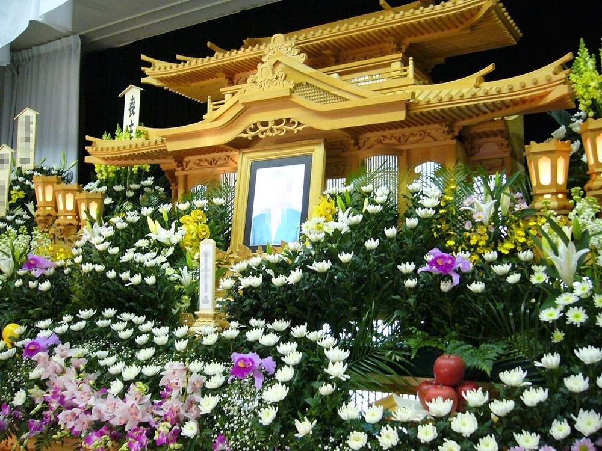
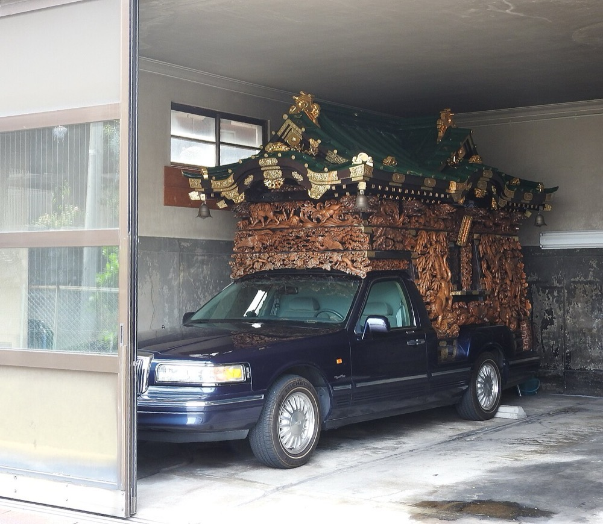

後継者のいない地方の葬儀社を、融資を使って買収する。買収した葬儀社の会館・搬送・生花・返礼品を共通化し、家族葬の小型会館に組み替える。営業先は病院・介護施設・寺院と、法人の社葬である。
2024年の死亡数は160万5,298人で、前年の157万6,016人より2万9,282人増えた1。2026年の調査では、葬儀費用の総額の平均は96.73万円で、内訳は基本料金72.02万円・飲食費11.67万円・返礼品費13.03万円である3。
推計 葬儀市場 ＝ 死亡数 × 葬儀費用の総額の平均 ＝ 160万5,298人 × 96.73万円 ≒ 1兆5,528億円
葬儀を行わない例と、調査の対象外の高額な社葬を含めていない。調査は直近2年以内に喪主を経験した40歳以上の2,000名を対象とする3。
経済産業省の特定サービス産業動態統計では、葬儀業の売上高は2024年に6,109億円、取扱件数は50万2,921件である4。この統計は売上の大きい事業所だけを集計するため、全国の死亡数の約31%に当たる件数しか含まない。1件当たりは約121万円で、調査の平均96.73万円より高い。
本ページでは世界の葬儀市場の規模を一次資料で確認できなかった。米国には上場の葬儀社グループが存在する。
| 年 | 変化 | 数値 |
|---|---|---|
| 2020年 | 葬儀業の売上高 | 5,135億円、前年比14.4%減4 |
| 2024年 | 死亡数 | 160万5,298人1 |
| 2024年 | 葬儀業の売上高 | 6,109億円、2017年の6,112億円と同じ水準に回復4 |
| 2024年度 | 燦ホールディングスが家族葬のきずなホールディングスを連結子会社にした | 2025年3月期の営業収益319億84百万円、前期比42.5%増6 |
| 2026年調査 | 葬儀費用の総額 | 96.73万円、前回調査の94.21万円から約2.5万円増3 |
| 2026年調査 | 葬儀の形式 | 家族葬47.0%、前回50.0%。一日葬11.9%、直葬・火葬式10.8%3 |
| 2040年 | 死亡数の推計 | 約166万5千人2 |
死亡数は2040年に約166万5千人まで増える推計で、2024年から約3.7%の増加である2。2040年より後の推移は本ページでは確認できなかった。今後20年増え続けるという前提は、確認できた範囲では2040年までの約14年に限られる。
単価は家族葬と直葬の比率で決まる。2026年の調査では単価がわずかに上がったが、一般葬の比率が下がれば単価も下がる。1件の単価が年1%下がると、2040年の市場は 166.5万人 × 96.73万円 × 0.99の14乗 ≒ 1.40兆円となり、2024年の推計1.55兆円を下回る。死亡数の増加だけで市場が拡大するとは言えない。
| 事業者 | 売上高 | 推計市場に対する比率 | 動き |
|---|---|---|---|
| 燦ホールディングス | 577億円 2026年3月期 | 約3.7% | 公益社などを傘下にもつ。きずなホールディングスを買収した5 6。577億円は決算短信の速報値である |
| ティア | 215.6億円 2025年9月期 | 約1.4% | 直営とフランチャイズの葬儀会館を展開する。葬儀事業の売上は198.7億円7 |
| 冠婚葬祭互助会 | 確認できなかった | 会員の積立金を前受金として受け、葬儀を提供する | |
| 地方の葬儀社 | 特定サービス産業動態統計の対象外の事業者が死亡の約7割を扱うと推定する4 |
上場の首位でも推計市場の約3.7%である。市場は多数の地方の葬儀社と互助会に分散している。
首位の条件 1つ目は、病院・介護施設からの搬送の依頼を受ける経路である。葬儀社の選択は死亡の直後に行われ、最初に搬送を受けた葬儀社が葬儀を受注する例が多い。2つ目は、1つの地域に会館を集め、搬送車と人員を共有する密度である。3つ目は、家族葬に合わせて大型会館を小型会館に組み替え、1件の利益を保つことである。


| 用途 | 金額 | 検証すること |
|---|---|---|
| 財務・労務・不動産の調査、仲介手数料 | 500万円 | 会館の土地と建物の権利関係、互助会の前受金の有無 |
| 1社目の取得の自己資金 | 2,200万円 | 売上3億円・EBITDA約4,500万円・会館2か所の葬儀社を約2.2億円で取得できるか |
| 会館の改装 | 500万円 | 大型の式場を家族葬向けに分割して、施行件数が増えるか |
| Webの集客と事前相談の窓口 | 400万円 | 生前の相談から受注に至る比率 |
| 運転資金 | 400万円 | |
| 合計 | 4,000万円 |
| 月 | 計画 |
|---|---|
| 1〜3月目 | 1つの県に絞り、売上2〜5億円・後継者不在・自社所有の会館をもつ葬儀社を30社まで一覧にする |
| 4〜6月目 | 3社と面談し1社と基本合意する。病院と介護施設からの搬送の依頼件数を確認する |
| 7月目 | 取得する。資金は自己資金2,200万円、日本政策金融公庫の承継向け融資7,200万円8、地銀の融資約1億円、売主への分割払い約2,600万円とする。地銀は会館の土地と建物を担保にする |
| 8〜12月目 | 旧経営者を顧問として残し、寺院と病院との関係を引き継ぐ。同じ県で2社目の候補を3社まで絞る |
1年目の判定基準は、施行件数が取得前の水準を保ち、1件当たりの粗利が下がらないことである。
| 段階 | 資金 | 金融機関 | 条件 |
|---|---|---|---|
| 1社目 1年目 | 事業承継融資、買収融資、売主の分割払い | 日本政策金融公庫 国民生活事業、地銀 | 公庫の限度は別枠7,200万円8。地銀は会館の土地と建物を担保にする |
| 2〜8社目 2〜5年目 | 持株会社による買収融資、資本性劣後ローン | 地銀、日本政策金融公庫 中小企業事業 | 資本性ローンの限度は15億円、期限一括返済で最長20年9 |
| 新しい会館 3年目以降 | 不動産の取得資金、セール・アンド・リースバック | 地銀、リース会社、不動産会社 | 取得した会館を売却して賃借し、買収資金に充てる |
| 9社目以降 5年目以降 | シンジケートローン | メガバンク、地銀の協調融資 | 連結EBITDAの3〜4倍を上限に借りる |
会館は担保になる不動産で、資金源は型Cに型Bの性格が加わる。
| 年目 | 1 | 2 | 3 | 5 | 7 | 10 |
|---|---|---|---|---|---|---|
| グループ会社数 | 1 | 4 | 9 | 25 | 50 | 90 |
| 売上高 億円 | 3 | 12 | 30 | 100 | 230 | 500 |
| 営業利益 億円 | 0.2 | 1.0 | 2.7 | 10 | 23 | 55 |
| 累計投資 億円 | 2.4 | 10 | 25 | 80 | 180 | 380 |
| 借入残高 億円 | 2.1 | 8.5 | 21 | 65 | 140 | 280 |
| 年目 | 1 | 2 | 3 | 5 | 7 | 10 |
|---|---|---|---|---|---|---|
| グループ会社数 | 1 | 2 | 3 | 7 | 13 | 25 |
| 売上高 億円 | 3 | 5 | 9 | 25 | 50 | 100 |
| 営業利益 億円 | 0.15 | 0.3 | 0.6 | 2.0 | 4.5 | 9 |
| 累計投資 億円 | 2.4 | 4 | 7.5 | 21 | 42 | 82 |
| 借入残高 億円 | 2.1 | 3.4 | 6 | 16 | 31 | 58 |
前提
楽観の10年目は売上高500億円で、1,000億円の目安に届かない。燦ホールディングスの2026年3月期の577億円も下回る。保守では25社、売上高100億円に留まる。
推計市場1.55兆円で、楽観の10年目の500億円は約3.2%である。首位の燦ホールディングスは2026年3月期に577億円で、買収で前期から約1.8倍になった5。首位も買収で拡大を続けており、10年で全国のシェア1位には届かない。
葬儀は地域の産業で、首位を取りうるのは地方ブロックか県の単位である。1,000億円以上の条件を満たすには、死亡数が 1,000億円 ÷ 96.73万円 ≒ 10.3万人以上の地域を要する。都道府県単位でこの条件を満たすのは人口の多い数都府県に限られると推定する。地方ブロックの死亡数と上位事業者の売上は、本ページでは確認できなかった。
停止する位置は3つある。1つ目は病院と介護施設からの搬送の依頼を引き継げない場合で、取得した葬儀社の施行件数が減る。2つ目は家族葬と直葬の比率が上がり、会館の稼働と単価が下がる場合である。3つ目は燦ホールディングスと互助会が同じ地域の葬儀社を買い、取得価格が上がる場合である。
| 順 | 国 | 理由 |
|---|---|---|
| 1 | 台湾、韓国 | 高齢化が日本と同じ方向に進む。葬儀の形式は宗教と慣習が異なり、運営の手法だけを提供する |
| 2 | 米国 | 上場の葬儀社グループが存在し、日本からの参入の余地は小さい |
葬儀は各国の宗教と慣習に依存する。グローバルなインフラになる見込みは低い。
| # | 基準 | 判定 | 根拠 |
|---|---|---|---|
| 1 | 50年、魂を燃やし続けられるか | 創業者が判定 | |
| 2 | 10年以内に、国内市場規模1,000億円以上の市場でシェア1位になれるか | △ | 全国では楽観の500億円が首位の577億円を下回る。県や地方ブロックで首位を取りうるが、地域別の上位事業者の売上は確認できない |
| 3 | 4,000万円で始められ、融資で伸ばせるか | ◎ | 公庫の承継融資と会館を担保にした地銀融資で約2.2億円の1社目を取得でき、以後は連結EBITDAを返済原資にできる |
| 4 | グローバルなインフラになり得るか | × | 葬儀は各国の宗教と慣習に依存し、輸出できるのは運営の手法に限られる |
| 5 | 営業力が最初の売上に直接結びつくか | ○ | 病院・介護施設・寺院への営業と法人の社葬の受注が、取得直後の施行件数を決める |
| 6 | 同じビジョンを共有する仲間を誘える事業か | 創業者が判定 | |
| 7 | 本業が早く現金を生み、返済と出資の原資になるか | ○ | 代金は施行の直後に入り、上場首位の営業利益率は約14%である。ただし大半は返済に充てられる |
| 8 | 投資先を束ねる群の中核になれるか | ○ | 生花・返礼品・仏壇・相続支援の各事業がグループの施行を共通の需要にできる |
| 9 | 成長の資金源がA・B・Cのどれに当たるか | C | 取得した葬儀社のキャッシュフローを返済原資にした借入で買収する。会館を担保にする点はBの性格をもつ |
1. 単価の下落 家族葬と直葬の比率が上がると、1件の単価が下がる。一般葬は161.3万円、家族葬は105.7万円、火葬式は42.8万円である10。対策は小型会館への組替えで1件の原価を下げることである。単価の下落そのものは潰せない。
2. 死亡数の頭打ち 死亡数の増加は2040年前後までの推計で、2024年からの増加は約3.7%である1 2。対策は2040年以降の会館の用途を、法要と相続の相談に広げることである。死亡数の減少は潰せない。
3. 搬送の依頼の喪失 葬儀社の受注は病院と介護施設からの依頼に依存する。旧経営者が退くと依頼が他社に移る。対策は旧経営者を1〜2年顧問として残し、依頼元との契約を会社の名義に移すことである。
4. 取得価格の上昇 上場の首位は買収で売上を約1.8倍にした5。同じ地域で競合すれば取得価格は上がる。対策は首位の会館が少ない県に集中することである。価格競争そのものは潰せない。